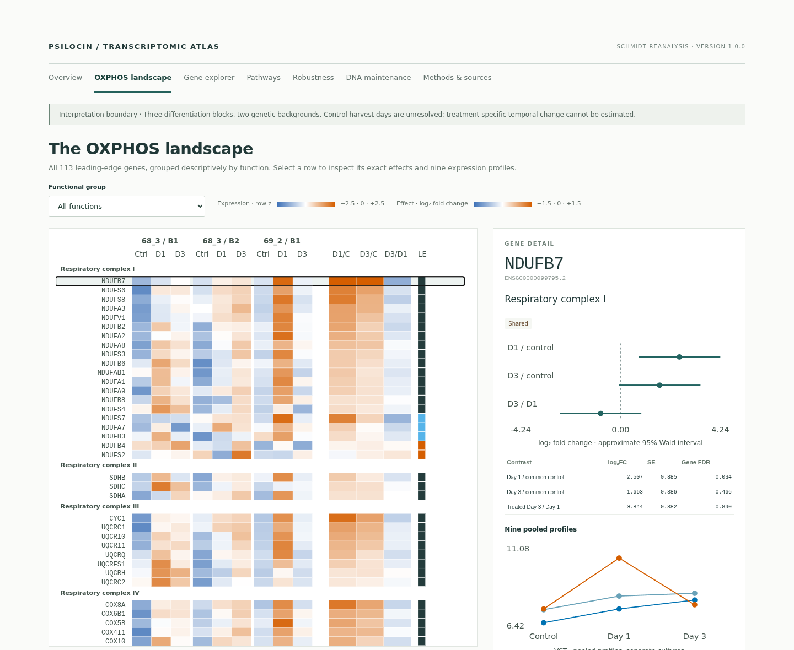

INDEPENDENT SECONDARY ANALYSIS
Psilocin
transcriptomic atlas
Metabolic and redox transcription
in human iPSC-derived cortical neurons
Code · derived results · interactive atlas
Source experiment: Schmidt et al. (2026)
